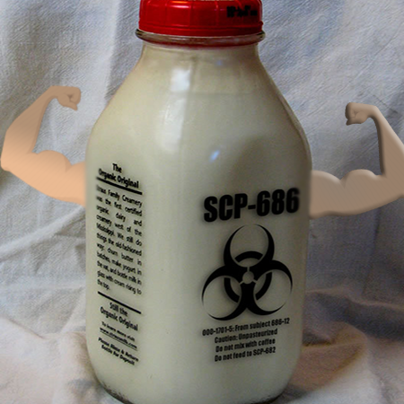

Buffilus Milkius

- Klassifikation: Milk
- Lab Nr: SCP-686
- Habitat: Canda's nordlige byzoner
- Gennemsnitlig Levetid(BedstFør): 2-6 år
- Gennemsnitlig Højde: Omkring 20cm
- Indholds Farve: Hvid, gul eller grå.
- Uddøde: 1994
Beskrivelse:
Buffilus Milkius levede fra ca. 1851 til 1994 hvor den sidst blev set. Da den existret kunne den løbe med sine arme derfor kunne man finde den overalt, men den levede bedst i de kolde dele af Canda ellers ville den mugne
– O.E.L. - (Det Overnaturlige Eksperiment Laboratorie)